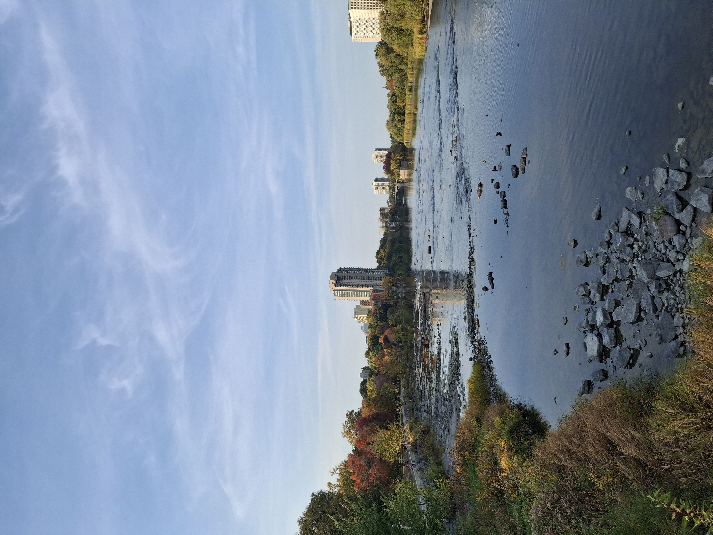

Upcoming
- Arithmetic Statistics, organized by the Centre de recherches mathématiques (CRM) from March 2-6, 2026, Université de Montréal
Past
- Torsion of Rational Elliptic Curves over the Galois Extensions of Q, Graduate Colloquium, September 2025, University of Ottawa
- Torsion of Rational Elliptic Curves over the Galois Extensions of Q, Ottawa Carleton Number Theory Seminar,, September 2025, University of Ottawa
- Torsion of Rational Elliptic Curves over the Cyclotomic Extensions of Q, Fields Number Theory Seminar, March 2025, The Fields Institute
- Torsion of Rational Elliptic Curves over the Cyclotomic Extensions of Q, Calgary ANTS Seminar, October 2024, Calgary University
- Torsion of Rational Elliptic Curves over the Cyclotomic Extensions of Q, Quebec - Maine Number Theory Conference, October 2024, Laval University
- Coordinator, 28th Junior Balkan Mathematical Olympiad, July 2024, Antalya, Turkey
- Torsion of Rational Elliptic Curves over the Cyclotomic Extensions of Q, Master's Thesis Presentation, May 2024, Boğaziçi University
- Coordinator, Boğaziçi University Mathematical Olympiads, May 2024, Boğaziçi University
- Nagell-Lutz Quickly, March 2024, Boğaziçi University
- Introduction to Elliptic Curves, February 2024, Boğaziçi University
- Introduction to Quadratic Residues, November 2023, Boğaziçi University
- A Brief Introduction to Elliptic Curves, November 2023, 13th Bahar Matematik Buluşması, Yeditepe University
- Coordinator, 40th Balkan Mathematical Olympiad, May 2023, Antalya, Turkey
- Lecturer, Mathematical Olympiad Winter Camp, TUBITAK, February 2023, Antalya, Turkey
- Large Zsigmondy Primes, February 2023, Boğaziçi University Graduate Seminar
- Applications of Projective Geometry on Olympiad Problems, October 2022, 11th Bahar Matematik Buluşması, Istanbul University
- Primitive Prime Factors of Dynamical Systems, October 2021, 10th Bahar Matematik Buluşması, Zoom
- On the IMO 2009 Shortlist Problem C5, May 2021, 9th Bahar Matematik Buluşması, Zoom
- Large Zsigmondy Primes, Senior Thesis Presentation, June 2021, Boğaziçi University
- Coordinator, Istanbul University Mathematical Olympiads, May 2021, Istanbul University, Zoom
- Applications of Zsigmondy’s Theorem on Olympiad Problems, October 2020, 8th Bahar Matematik Buluşması, Zoom
- Permutation Polynomials, February 2020, 7th Bahar Matematik Buluşması, Boğaziçi University
- Lecturer, Mathematical Olympiads Program, April 2019, Sarajevo University, Sarajevo, Bosnia & Herzegovina
- Coordinator, Medipol University Mathematical Olympiads, March 2019, Medipol University, Istanbul, Turkey
- Secretary Problem, March 2019, 7th Bahar Matematik Buluşması, Bilgi University
- Lecturer, Mathematical Olympiad Winter Camp, TUBITAK, January 2019, Antalya, Turkey
- Lecturer, Mathematical Olympiad Fall Camp, TUBITAK, November 2018, Yalova, Turkey
- Lecturer, Mathematical Olympiad Summer Camp, TUBITAK, September 2017, Afyon, Turkey